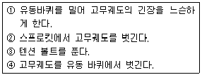

농기계정비기능사 (2003-07-20 기출문제)
1과목: 농기계정비
1. 다음은 기관의 흡, 배기밸브의 점검 사항이다. 아래 항목 중 틀린 것은?
- 밸브의 크기
- 접촉 상태
- 스템의 휨, 마멸
- 밸브 마진
(정답률: 70%)

2. 벼 보행 이앙기의 식부본수 및 식부깊이 조절에 대한 설명 중 잘못된 것은?
- 묘 탱크 전판을 위로 올리면 식부본수는 적어 진다.
- 스윙 핸들로써 식부깊이를 조절한다.
- 연한 토양에는 식부깊이를 낮게 조정한다.
- 플로우트를 표준위치 보다 높게 하면 식부는 깊어진다.
(정답률: 69%)
3. 12V전원을 사용하는 점화플러그의 전극 간극은 몇 ㎜정도인가?
- 0.2~0.3㎜
- 0.4~0.5㎜
- 0.5~0.7㎜
- 0.9~1.0㎜
(정답률: 23%)
4. 가솔린 기관에 사용되는 연료의 구비 조건을 열거한 것이다. 구비조건이 아닌 것은?
- 부식성이 클 것
- 안전성이 클 것
- 내폭성이 클 것
- 휘발성이 클 것
(정답률: 91%)
5. 다음 기관이 이상폭발을 할 때의 원인이 아닌 것은?
- 흡입밸브의 작동 불량
- 배기밸브의 작동 불량
- 부하(負荷)의 과대
- 혼합가스 부족
(정답률: 58%)
6. 점화 플러그 불꽃이 정상일 때의 색깔은?
- 파란색 불꽃
- 노랑색 불꽃
- 빨간색 불꽃
- 흰색 불꽃
(정답률: 75%)
7. 밸브 오우버랩(overlap)이란 무엇인가?
- 상사점 부근에서 흡, 배기밸브가 동시에 닫혀 있는 상태
- 하사점 부근에서 흡, 배기밸브가 동시에 닫혀 있는 상태
- 상사점 부근에서 흡, 배기밸브가 동시에 열려 있는 상태
- 하사점 부근에서 흡, 배기밸브가 동시에 열려 있는 상태
(정답률: 82%)
8. 4행정사이클 4기통 가솔린엔진에서 점화순서가 1-3-4-2이다.1번 실린더가 동력행정을 할 때 맞는 것은?
- 제 2번 실린더는 배기행정을 한다.
- 제 2번 실린더는 흡기행정을 한다.
- 제 3번 실린더는 흡기행정을 한다.
- 제 3번 실린더는 배기행정을 한다.
(정답률: 42%)
9. 다음 중 크랭크핀 베어링 간극의 측정 방법에 해당하지않는 것은?
- 마이크로 미터와 텔레스 코핑 게이지
- 플라스틱 게이지
- 인주와 광명단
- 실납과 마이크로미터
(정답률: 58%)
10. 크랭크축 기어와 캠축 기어의 직경비는?
- 3:1
- 1:2
- 1:1
- 4:1
(정답률: 65%)
11. 다음 중 트랙터 브레이크 페달이 발판에 닿는 원인으로 맞는 것은?
- 브레이크 오일질이 나쁘다.
- 타이어의 공기압이 고르지 않다.
- 라이닝과 드럼사이에 오일이 묻어 있다.
- 브레이크 파이프내에 공기가 들어 있거나 오일이 부족하다.
(정답률: 88%)
12. 흡배기 밸브에서 가이드(Guide)를 설치하는 이유에 적합한 것은?
- 밸브를 견고하게 하기 위해서
- 밸브 휨을 방지하기 위해서
- 밸브의 스프링 파손 방지를 위하여
- 로커 암을 보호하기 위해서
(정답률: 59%)
13. 차륜형 트랙터의 장점이 아닌 것은?
- 견인력이 크고 잘 미끄러지지 않는다.
- 운전이 용이하다.
- 제작 가격이 싸다
- 고속 운전이 가능하다.
(정답률: 29%)
14. 경운기의 조향클러치는 보통 어떠한 형식을 사용하고 있는가?
- 마찰 클러치
- 유체 클러치
- 전자 클러치
- 도그 클러치
(정답률: 57%)
15. 동력 경운기의 클러치 중에서 판의 마찰력을 조절하는 방법으로 맞는 것은?
- 마찰판을 빼낸다.
- 릴리스 베어링을 교환한다.
- 클러치 스프링을 조절한다.
- V 풀리를 교환한다.
(정답률: 65%)
16. 플라이 휘일의 기능을 맞게 설명한 것은?
- 기관의 동력을 증가 시킨다.
- 기관의 회전을 고르게 한다.
- 기관의 가속을 빠르게 한다.
- 연료 소모량을 감소 시킨다.
(정답률: 68%)
17. 트랙터용 경운 작업기 몰드 보드 플라우의 3대 구성요소가 아닌 것은?
- 보습
- 콜터
- 바닥쇠
- 몰드 보드
(정답률: 49%)
18. 노즐 테스터에 사용하는 연료는?
- 석유
- 경유
- 휘발유
- 솔벤트유
(정답률: 65%)
19. 기계이앙시 유압장치는 어느 위치에 놓는가?
- 완전히 내린다.
- 1/2쯤 내린다.
- 1/2쯤 올린다.
- 완전히 올린다.
(정답률: 58%)
20. 유압 표시등의 작동이 일어나는 현상 중 옳은 것은?
- 유압이 너무 낮아질 때 켜진다.
- 유압이 너무 높아질 때 켜진다.
- 규정 압력에서 켜져 있다가 압력이 올라가면 꺼진다.
- 규정 압력엔 켜지고 내려가면 꺼진다.
(정답률: 49%)
2과목: 농기계전기
21. 기화기에 설치된 스로틀 밸브의 역할을 가장 바르게 설명한 것은?
- 연료의 무화촉진
- 혼합기의 량을 조정
- 연료의 온도 조정
- 연료의 유면높이 조정
(정답률: 81%)
22. 장궤형 콤바인의 고무 바퀴궤도를 분리할 때 [보기]의 내용 중 조치순서로 맞는 것은?

- ① - ③ - ② - ④
- ③ - ① - ④ - ②
- ③ - ① - ② - ④
- ④ - ① - ③ - ②
(정답률: 45%)
23. 기동 전동기의 단선시험시 각 정류자편 사이의 점검시 파이롯등에 불이 들어오면?
- 단선
- 접지
- 단락
- 정상
(정답률: 50%)
24. 어떤 도체에 전류가 4A, 전압이 100V이다. 저항은 얼마인가?
- 25Ω
- 30Ω
- 35Ω
- 40Ω
(정답률: 83%)
25. 20W용 형광등을 20일동안 매일 4시간씩 켰다면 소비 전력량은?
- 1.6kWh
- 16kWh
- 160Wh
- 16Wh
(정답률: 52%)
26. 트랙터의 조향전달 순서가 맞는 것은?
- 조향핸들→ 피트먼암→ 조향기어→ 타이로드→ 너클암→ 바퀴
- 조향핸들→ 조향기어→ 피트먼암→ 타이로드→ 너클암→ 바퀴
- 조향핸들→ 조향기어→ 타이로드→ 피트먼암→ 너클암→ 바퀴
- 조향핸들→ 피트먼암→ 타이로드→ 조향기어→ 너클암→ 바퀴
(정답률: 52%)
27. 동력경운기의 정비 사항이 아닌 것은?
- 토인
- 팬벨트
- V벨트
- 타이어 공기압
(정답률: 69%)
28. 동력경운기의 주행중 2단 혹은 3단 변속이 빠지는 원인은?
- 윤활유 부족
- 주축 슬라이딩 기어의 마멸
- 윤활유의 부적당
- 상시 물림기어의 백래시 과다
(정답률: 70%)
29. 다음은 타이어의 이상마모의 원인을 들었다. 아닌 것은?
- 과대한 토인
- 적정 공기압
- 과대한 캠버
- 캐스터의 부정확
(정답률: 82%)
30. 동력경운기의 차축 정비시 점검 정비할 내용으로 옳지 못한 것은?
- 차축
- 오일실
- 베어링
- 토인
(정답률: 59%)
31. 물질이 자유전자의 이동으로 양전기나 음전기를 띠게 되는 현상을 무엇이라 하는가?
- 접지
- 전기량
- 대전
- 중성자
(정답률: 62%)
32. 0.02[A]는 몇[㎂]인가?
- 2 x 10-4[㎂]
- 2 x 104[㎂]
- 2 x 10-6[㎂]
- 2 x 108[㎂]
(정답률: 55%)
33. 6[Ω], 10[Ω], 15[Ω]의 저항이 병렬로 접속 되었을 때의 합성저항은?
- 1/3[Ω]
- 3 [Ω]
- 15 [Ω]
- 31 [Ω]
(정답률: 42%)
34. 축전지의 충.방전 작용은?
- 자기작용
- 화학작용
- 물리작용
- 확산작용
(정답률: 91%)
35. 축전지의 점검, 취급 사항 중 적합하지 않은 것은?
- 축전지를 사용하지 않을 때에는 3개월마다 보충전 한다.
- 전해액 량을 정기적으로 점검한다.
- 전해액 비중을 정기적으로 점검한다.
- 축전지의 단자와 커버 윗면을 깨끗이 한다.
(정답률: 67%)
36. 100Ah 축전지는 300A의 전기를 얼마동안 발생시킬 수 있는가?
- 5분
- 15분
- 10분
- 20분
(정답률: 33%)
37. 다음 중 기동전동기의 피니언과 링기어의 물림방식에 속하지 않는 것은 어느 것인가?
- 벤딕스
- 유니버셜식
- 오우버 러닝 클러치식
- 전기자 슬립식
(정답률: 35%)
38. 축전기와 단속기 연결방법은?
- 직렬 접속
- 병렬 접속
- 직병렬 접속
- Y결선
(정답률: 36%)
39. 점화코일에 대한 설명이 잘못된 것은?
- 점화코일 1차측에 발생한 전압은 1차코일의 권수와 전류의 변화속도에 비례한다.
- 점화코일의 철심으로는 규소 강판을 사용한다.
- 자기 유도작용과 상호 유도작용에 의해 2차코일에 고전압이 발생한다.
- 1차코일 쪽보다 2차코일 쪽에 더 큰 전류가 흐른다.
(정답률: 35%)
40. 축전기의 역할에 대해서 틀리게 설명한 것은?
- 접점사이에 발생되는 불꽃을 흡수하여 접점이 소손되는 것을 방지한다.
- 1차 전류의 차단시간을 단축하여 2차 전압을 저하 시킨다.
- 접점이 닫혀있을 때는 축적한 전하를 방출하여 1차 전류의 회복이 속히 이루어 지도록 한다.
- 축전기는 접점사이에 불꽃방전을 방지한다.
(정답률: 50%)
3과목: 농기계안전관리
41. 직류발전기 조정에 필요없는 조정기는?
- 전압조정기
- 전류조정기
- 역류방지기
- 저항조정기
(정답률: 40%)
42. 형광등에서 고온에서 필라멘트의 증발을 막기위하여 텅그스텐과 화합이 잘되지 않는 불활성 가스로 봉입해야 하는 데 봉입하는 가스로 가장 적합한 것은?
- 헬륨
- 탄소
- 규소
- 아르곤
(정답률: 50%)
43. 배전기의 기능에 속하지 않는 것은?
- 점화 1차 전류의 접점을 단속하여 점화 2차 코일에 고압전기를 유도케 한다.
- 점화 2차 코일에 유도된 고압전기를 점화 순서에 따라 각실린더 점화플러그에 보낸다.
- 엔진의 회전 속도에 따라 점화시기를 빠르게 하거나 늦게한다.
- 점화플러그에 불꽃 방전은 일으킬 수 있는 높은 전압의 전류를 발생시키는 승압 변압기이다.
(정답률: 59%)
44. 역류방지기(cut-out relay)의 접점의 틈새 조정은?
- 접점을 닫고 점검한다.
- 접점을 열고 점검한다.
- 충전하면서 점검한다.
- 축전기를 접속시키고 점검한다.
(정답률: 60%)
45. 다음 중 4행정 기관의 4행정 작동순서가 바른 것은?
- 흡입 - 팽창 - 압축 - 배기
- 흡입 - 압축 - 팽창 - 배기
- 흡입 - 배기 - 압축 - 팽창
- 흡입 - 압축 - 배기 - 팽창
(정답률: 72%)
46. 다음 어떤 상태에서 벨트걸기를 하는 것이 안전한가?
- 고속 회전할 때
- 중속 회전할 때
- 저속 회전할 때
- 회전이 중지되었을 때
(정답률: 85%)
47. 동력경운기 트레일러의 표준 적재량은 500∼1000kg 이나 많은 짐을 싣기 위하여 트레일러를 개조하여 사용했을 때의 결과로 잘못된 것은?
- 기계의 수명을 단축시킨다.
- 동력전달 계통이 마모되거나 히치 부분이 파손된다.
- 운전 조작이 쉽고 경사지 상하 주행시 안전 운행이 된다.
- 기계에 큰 부하가 걸린다.
(정답률: 87%)
48. 어떤 양수장치에 의하여 공동현상(cavitation)이 일어나고 있을 때 조치사항이 아닌 것은?
- 물의 누설을 많이 시킨다
- 펌프의 설치 위치를 낮춘다
- 펌프의 회전수를 적게 한다
- 펌프의 흡입관을 크게 한다
(정답률: 45%)
49. 작업을 하다 다른 사람이 감전 되었을 때 어떻게 해야 하는가?
- 병원에 연락을 한다.
- 전원을 끊고 감전자를 응급치료 한다.
- 빨리가서 감전자를 떼어 놓는다.
- 물을 붓는다.
(정답률: 89%)
50. 화재는 A 급, B 급, C 급, D 급으로 구분한다. 이 중유류 화재는 몇 급인가?
- A 급
- B 급
- C 급
- D 급
(정답률: 69%)
51. 농장에서 트랙터로 작업을 할 때 주의할 사항 중 잘못된것은?
- 운전석은 몸에 맞지 않아도 된다.
- 작업을 하기전에 기계가 안전한가 점검한다.
- 사고를 막기 위해서 먼저 계획을 세운다.
- 히치의 높이는 적당하며 핀은 안전한가 확인한다.
(정답률: 92%)
52. 다음 중에서 인화성 물질이 아닌 것은?
- 질소 가스
- 프로판 가스
- 메탄 가스
- 아세틸렌 가스
(정답률: 62%)
53. 기계와 기계사이 또는 기계와 다른 설비와의 사이에 설치하는 통로의 너비는 적어도 몇 cm이상 이어야 하는가?
- 40 cm
- 60 cm
- 70 cm
- 80 cm
(정답률: 58%)
54. 내연기관 취급중 발생하기 쉬운 사고들 중 조작자 부상의 원인이 될 수 있는 것은?
- 운동부분 및 동력 전달장치와의 접촉
- 전기계통의 접지불량
- 배기가스의 흡입
- 운전중 연료보급
(정답률: 64%)
55. 산소 누설을 점검하는데 가장 적합한 것은?
- 성냥불
- 석유
- 물
- 비눗물
(정답률: 91%)
56. 다음 중 수공구 안전사고 원인에 해당되지 않는 것은?
- 사용법이 미숙하고 사용규정이 되어있지 않을 때
- 수공구의 성능을 잘 알고 선택하여 사용하였을 때
- 힘에 맞지 않는 공구를 사용하였을 때
- 점검 및 정비와 수입이 되어 있지 않은 공구를 사용하였을 때
(정답률: 80%)
57. 농기계 사고발생의 3대 요인이 아닌 것은?
- 복합적 요인
- 기계적 요인
- 환경적 요인
- 인간적 요인
(정답률: 70%)
58. 부품의 세척작업 중 알칼리성이나 산성의 세척유가 눈에 들어 갔을 때 가장 좋은 조치방법은?
- 먼저 산성 세척유로 중화시킨다.
- 먼저 바람 부는 쪽을 향해 눈을 크게 뜨고 눈물을 흘린다.
- 먼저 수돗물로 씻어낸다.
- 먼저 붕산수를 넣어 중화시킨다.
(정답률: 53%)
59. 쇠톱을 사용함에 있어서 가장 안전한 방법은?
- 절단이 끝날 무렵에는 천천히 작업한다.
- 한손으로 작업해도 무방하다.
- 절단이 끝날 무렵에는 힘을 강하게 준다
- 공작물을 동료가 잡고한다.
(정답률: 78%)
60. 보호 마스크를 사용하여야 하는 장소와 종류를 연결한 것이다. 맞지 않는 것은?
- 먼지가 많은 장소― 방진 마스크
- 산소가 16%이하 시― 산소 마스크
- 유해가스가 발생 시― 방독 마스크
- 유해 광선이나 용접 시― 방진 마스크
(정답률: 44%)
밸브의 크기는 점검 사항이 아니라 설계 단계에서 결정되는 것이기 때문입니다.
접촉 상태는 밸브가 닫혔을 때 밸브와 시트의 밀착 상태를 의미합니다.
스템의 휨, 마멸은 밸브 스템의 굽힘 정도와 마모 정도를 의미합니다.
밸브 마진은 밸브가 닫혔을 때 밸브와 시트 사이의 간격을 의미합니다.